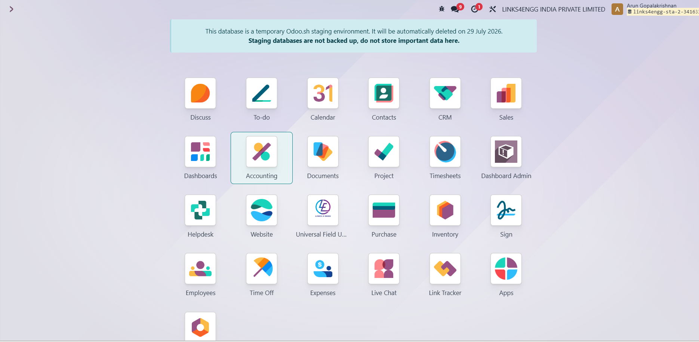
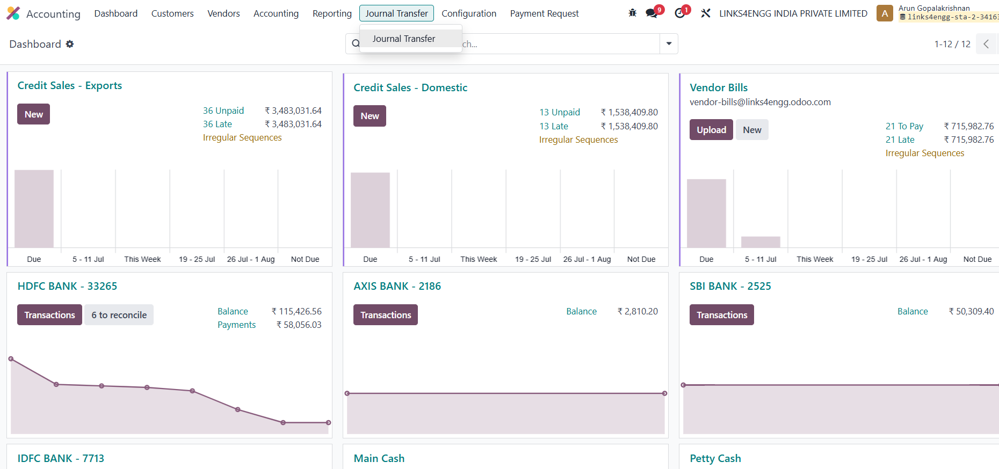
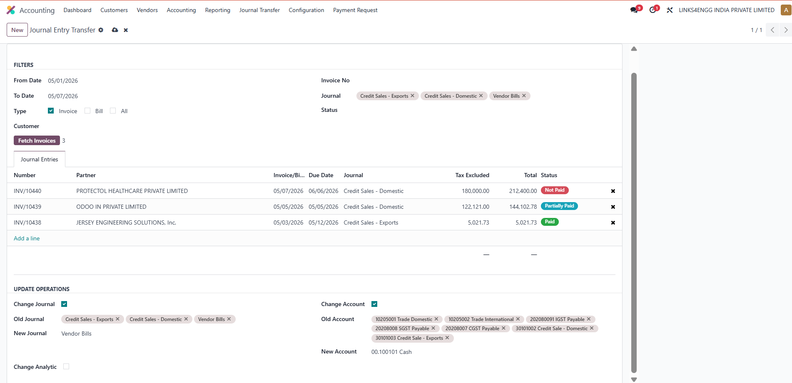
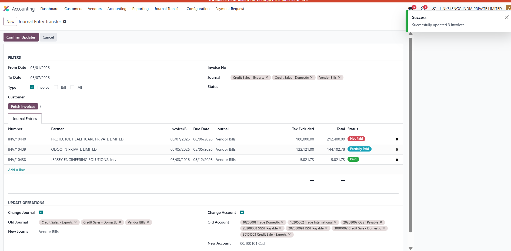
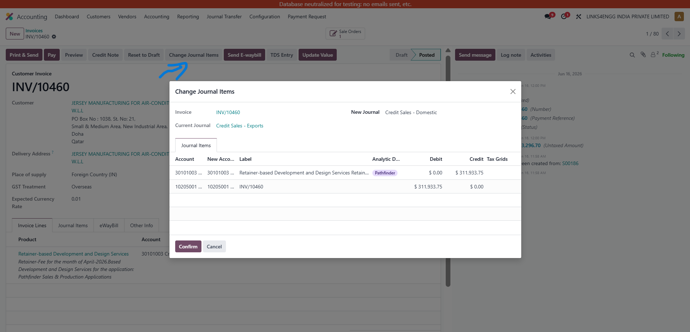

Journal Entry Transfer (Bulk & Individual)
The ultimate time-saving tool to seamlessly update Journals, Accounts, and Analytics for posted invoices and bills—in bulk or individually!
The ultimate time-saving tool to seamlessly update Journals, Accounts, and Analytics for posted invoices and bills—in bulk or individually!
Organizations frequently discover that invoices or vendor bills have been posted using an incorrect journal, incorrect income or expense account, or incorrect analytic account after documents have already been validated. Standard Odoo accounting does not allow these fields to be modified on posted journal entries because of accounting integrity rules. As a result, users usually need to cancel the document, reset it to draft, perform corrections, and post it again. This process is slow, error-prone, and becomes almost impossible when hundreds or thousands of invoices require correction.
Journal Entry Transfer solves this problem by providing secure bulk and individual update tools that allow accountants to modify Journals, General Ledger Accounts, and Analytic Distributions directly on posted accounting entries without manually reopening every document. The module significantly reduces accounting correction time while preserving accounting balances and ensuring consistency across related journal items.
For bulk operations, filter by Date Ranges, Specific Partners, Invoice Numbers, Source Journals, and Document Types (Invoices/Bills).
Don't need bulk? Use the "Change Journal Items" button directly on any posted invoice to specifically remap lines to new accounts instantly.
The bulk wizard populates a grid with matching invoices. Visually review the list and individually remove any invoice that shouldn't be touched.
The wizard allows accountants to locate hundreds or thousands of posted invoices using multiple search criteria including Date Range, Customer, Vendor, Invoice Number, Journal, Payment Status, and Invoice Type. After searching, matching documents are displayed in an editable list where unwanted records can be removed before processing.
Allows changing Old Journal → New Journal without reopening posted entries. It safely updates all underlying accounting headers and lines simultaneously.
Supports replacing multiple existing accounts with a new account. Highly useful for correcting a Wrong Income Account, Wrong Expense Account, Wrong Asset Account, or Wrong Liability Account seamlessly.
Supports updating analytic distributions dynamically. It automatically replaces selected analytics, preserves percentages, and perfectly synchronizes the data for accurate reporting.
How the interface looks inside your Odoo database.
Navigate to your Odoo enterprise dashboard and open the Accounting application.


Under the Accounting app, find the dedicated menu item for "Journal Transfer".
Enter your criteria in the wizard. The system dynamically fetches all posted invoices that match and populates the grid. You can manually remove any invoice using the 'X' icon.


After confirming, the system instantly processes the bulk transfer and displays a success message confirming the number of invoices updated.
Open any posted Customer Invoice or Vendor Bill to find the dedicated "Change Journal Items" button for precise, individual document corrections.

Unlike manually cancelling and reposting hundreds of invoices, this module allows accountants to perform secure journal, account, and analytic corrections in just a few clicks. It combines powerful filtering, batch processing, direct invoice editing, and optimized database updates into one easy-to-use solution. Whether correcting migration errors, reorganizing chart of accounts, or fixing posting mistakes, the module dramatically reduces effort while maintaining accounting consistency.
Our expert team at Links4Engg is ready to assist you. Whether you need support configuring this app or want to request custom Odoo features, get in touch with us!
support@links4engg.com